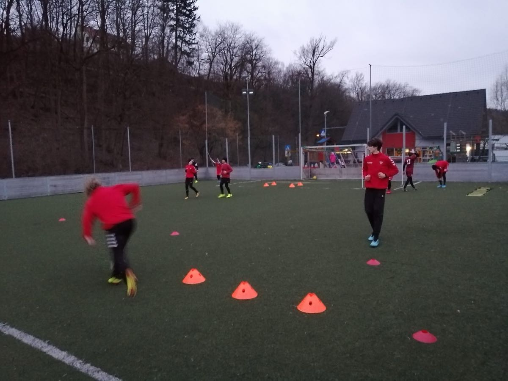

Individualni treningi so postali velik trend in predvsem precejšnji vir zasluižka za nekatere trenerje. Vse lepo in prav, tudi sam se nagibam k temu, da bi več časa posvetil individualnim treningom za izboljšanje tehnike. Vprašati pa se moramo kdaj pričeti s tovrstnimi treningi, pri kateri starosti in kaj je sploh cilj treningov oz. komu zaupati naše otroke.
Sam osebno bi zelo težko določil čas, kdaj je za otroka najbolj primerno za pričetek izvajanja tovrstnih treningov. Rekel bi nekje med desetim in štirinajstim letom, a bolj pomembno je, kdaj se otrok sam odloči, da je to tisto, kar si želi.
Zavedati se moramo, da je na nogometni sceni ogromno trenerjev, ki nudijo tovrstne usluge in starši včasih brez tehtnega premisleka otroke vpisujejo na omenjene treninge, kljub relativno visokim cenam. Vprašanje je ali gre za ambicije staršev ali otrok? Individualne treninge oz. treninge v manjših skupinah, bi morali voditi trenerji, bivši nogometaši, ki so s tehniko na “ti”, tukaj ne gre drugače. Če povem po pravici, jih na tem področju ravno veliko še nisem srečal.

Torej starši; vprašajte se, komu plačujete te storitve in zakaj. Vsi poznamo genija Josipa Iličića in o njem krožijo različne zgodbe. Obvladovanje žoge in nogometna tehnika, katera na najvišjem nivoju krasi našega maestra, izhaja iz uličnega nogometa. Moramo se zavedati, da nogometna igrišča ob šolah samevajo, pa ne govorim o časih v katerih se nahajamo, ko je to tako ali tako igranje nogometa nemogoče.
Samo za razmislek: dve do tri ure na igrišču za šolo, pred blokom ali kjerkoli – ali dvajset eur za trening, ki ga vodi nekdo, ki mu je tehnika tuja?Starši na vas je, da razmislite. Mimogrede, JOJO ni imel individualnih treningov, ki vam jih ponujajo določeni trenerji in vam prodajajo zgodbe o napredku čez noč!?
Trener, Dejan Robnik